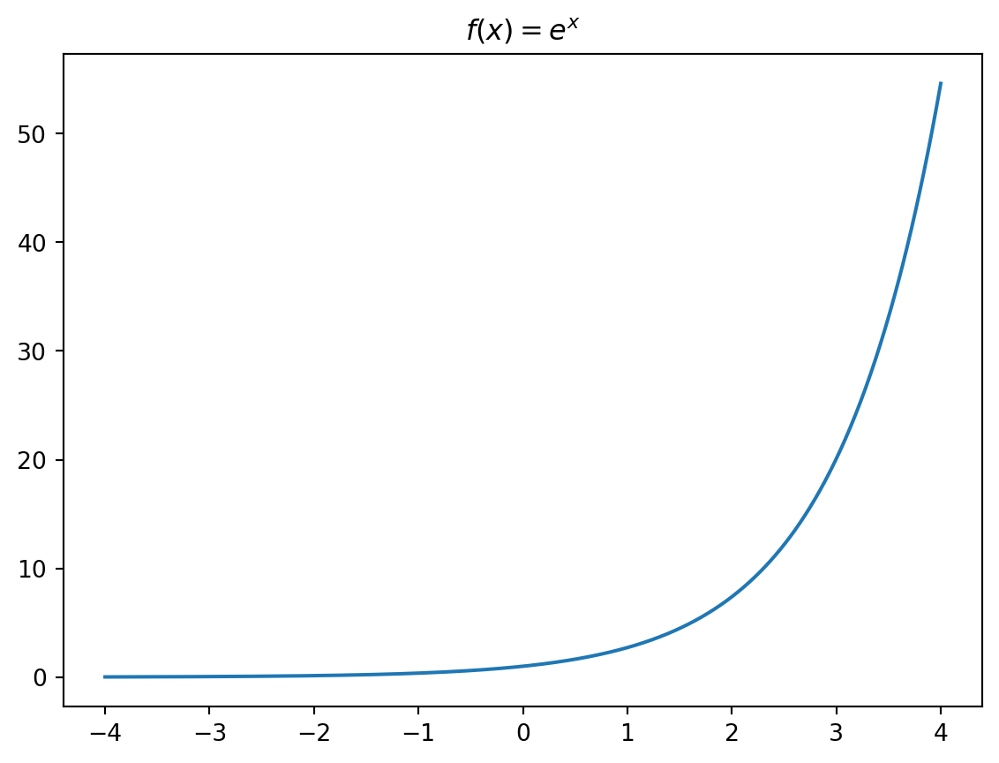
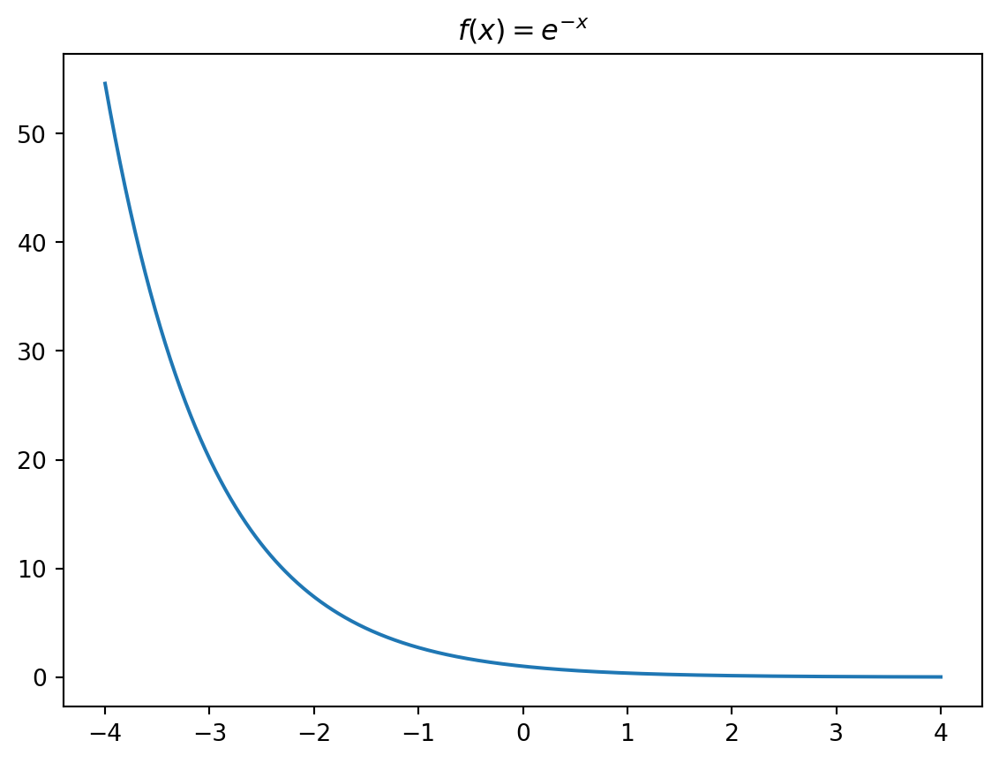
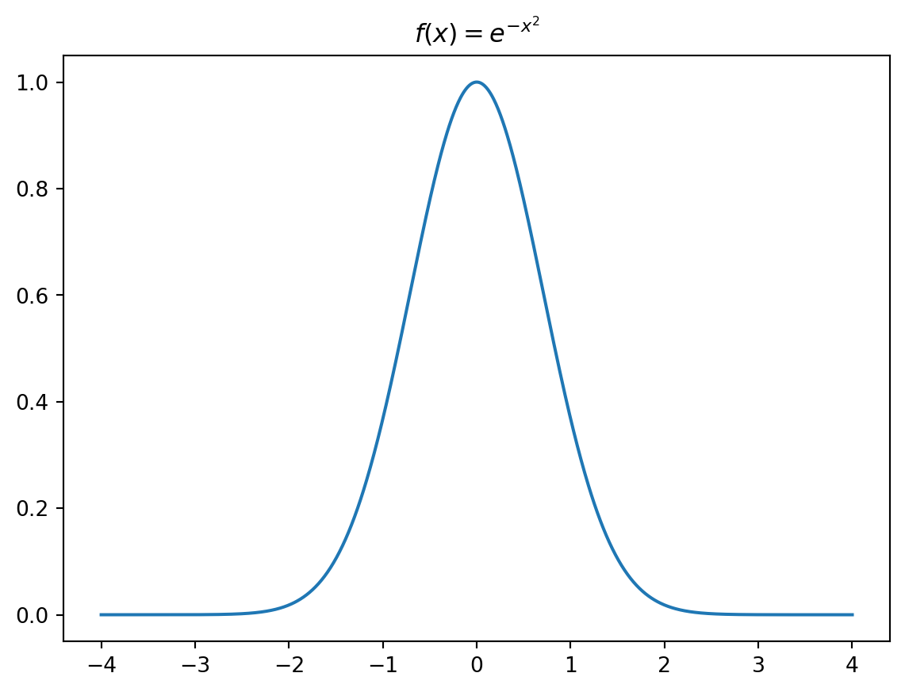
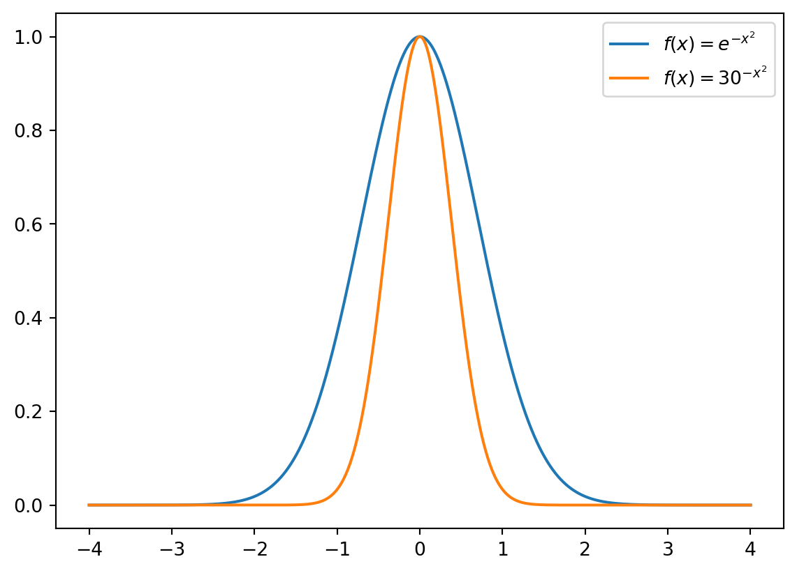
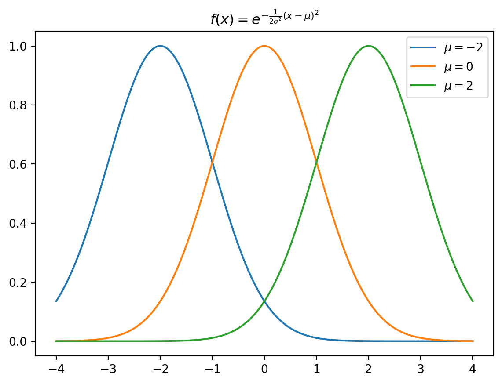

import numpy as np
import matplotlib.pyplot as pltO modelo da distribuição normal
Um modelo para a distribuição de alturas
Apresenta o modelo matemático da distribuição normal.
Bibliotecas utilizadas nesta seção

A partir da Figura 1, percebemos que a maioria dos alunos tem alturas intermediárias, enquanto poucos são muito altos ou muito baixos, o que está de acordo com nossa intuição sobre a distribuição das alturas em adultos. Vamos construir passo-a-passo uma função matemática que seja capaz de capturar este comportamento.
1 Um modelo para a distribuição de alturas
Começaremos com a função de crescimento exponencial:
\[f(x) = e^x\]
e de decaimento exponencial:
\[f(x) = e^{-x}\]
Combinando as duas, temos:
\[f(x) = e^{-\mid x \mid}\]
Para ter uma transição mais suave, fazemos uma pequena modificação na função:
\[f(x) = e^{-x^2}\]
O código a seguir cria vetores a partir destas funções que podemos visualizar graficamente:
x = np.linspace(-4, 4, 1000)
# Crescimento exponencial
fx = np.exp(x)
plt.plot(x, fx)
plt.title(r'$f(x) = e^x$')
plt.show()
# Decaimento exponencial
fx = np.exp(-x)
plt.plot(x, fx)
plt.title(r'$f(x) = e^{-x}$')
plt.show()
# Combinação dos dois
fx = np.exp(-np.abs(x))
plt.plot(x, fx)
plt.title(r'$f(x) = e^{-|x|}$')
plt.show()
# Transição suave
fx = np.exp(-x**2)
plt.plot(x, fx)
plt.title(r'$f(x) = e^{-x^2}$')
plt.show()



2 Inserindo o parâmetro de dispersão \(\sigma\)
Em \(f(x) = e^{-x^2}\), não há nada de especial com a escolha da base de Euler (\(e = 2.718282...\)). Poderíamos ter escolhido qualquer outro número, por exemplo, \(30^{-x^2}\), o que nos daria uma função com formato similar:
# Comparação entre e^{-x^2} e 30^{-x^2}
fx1 = np.exp(-x**2)
fx2 = 30**(-x**2)
plt.plot(x, fx1, label=r'$f(x) = e^{-x^2}$')
plt.plot(x, fx2, label=r'$f(x) = 30^{-x^2}$')
plt.legend()
plt.show()
Note, entretanto, que a função \(f(x) = e^{-x^2}\) tem um decaimento mais suave se comparado à \(f(x) = 30^{-x^2}\), um comportamento que pode ser controlado inserindo uma constante \(c = \frac{1}{2\sigma^2}\):
\[f(x) = e^{-\frac{1}{2\sigma^2}x^2}\]
Fazendo desta forma, o parâmetro \(\sigma\) passa a controlar a largura ou dispersão da curva: valores maiores de \(\sigma\) tornam o decaimento mais lento e a curva mais “espalhada”, enquanto valores menores de \(\sigma\) a tornam mais estreita e concentrada ao redor de zero.
Curiosidade
A escolha da constante \(c = \frac{1}{2\sigma^2}\) tem o efeito prático de fazer com que a concavidade da curva mude exatamente nos pontos \(x = +\sigma\) e \(x = -\sigma\). Na função da distribuição normal, \(\sigma\) será chamado de desvio padrão.
# Variando o valor de sigma
sigmas = [0.5, 1, 2]
for sigma in sigmas:
fx = np.exp(-(1/(2*(sigma**2)))*x**2)
plt.plot(x, fx, label=fr'$\sigma = {sigma}$')
plt.legend()
plt.title(r'$f(x) = e^{-\frac{1}{2\sigma^2}x^2}$')
plt.show()
3 Inserindo o parâmetro de posição \(\mu\)
Por enquanto temos a função:
\[f(x) = e^{-\frac{1}{2\sigma^2}x^2}\]
que nos permite agora alterar a abertura da curva, mas está centralizada em zero. Se quisermos que elaesta função possa representar fenômenos que não estejam centrados em zero, precisamos ser capazes de deslocar a função para a direita ou para a esquerda. Fazemos isso inserindo um novo parâmetro que será denominado de a média \(\mu\) da dsitribuição:
\[f(x) = e^{-\frac{1}{2\sigma^2}(x-\mu)^2}\]
# Variando o valor de mi (média)
mis = [-2, 0, 2]
sigma = 1
for mi in mis:
fx = np.exp(-(1/(2*(sigma**2)))*(x-mi)**2)
plt.plot(x, fx, label=fr'$\mu = {mi}$')
plt.legend()
plt.title(r'$f(x) = e^{-\frac{1}{2\sigma^2}(x-\mu)^2}$')
plt.show()
4 Usando a função como uma Distribuição de Probabilidades
Se queremos utilizar a função acima para prever a frequência relativa de alturas, precisamos que a área abaixo da curva seja igual a 1, o que a transforma em uma Função de Densidade de Probabilidade (PDF).
Vemos entretanto que a área da função é igual a \(\sigma \sqrt{2\pi}\).
O que pode ser conferido obtendo a integral da função: \(\int_{-\infty}^{+\infty} f(x) d(x)\)
from scipy.integrate import quad
# Definindo a função f
def f(x, mi, sigma):
if sigma <= 0:
sigma = 1
fx = np.exp(-(1/(2*(sigma**2)))*(x-mi)**2)
return (fx)
# Area sob a curva
mi = 0
sigma = 1
area, erro = quad(f, -np.inf, np.inf, args = (mi, sigma))
print(f"Área sob a curva = {area:.5f}")
# 2 x raiz(2 x pi)
print(sigma * np.sqrt(2*np.pi))Área sob a curva = 2.50663
2.5066282746310002Para corrigir a área sob a curva, inserimos \(\sigma \sqrt{2\pi}\) no denominador da função, ficando com:
\[f(x) = \frac{1}{\sigma \sqrt{2\pi}} e^{-\frac{1}{2\sigma^2}(x-\mu)^2}\]
A função acima é conhecida como Distribuição Normal ou Curva de Gauss. Nesta função \(\mu\) é a média, que representa o ponto central da curva, e \(\sigma\) é o desvio padrão que controla a abertura da curva.
Podemos verificar agora que a área desta função é sempre igua a 1.
from scipy.integrate import quad
# Definindo a função f
def fnormal(x, mi, sigma):
if sigma <= 0:
sigma = 1
fx = (1/(sigma*np.sqrt(2*np.pi))) * np.exp(-(1/(2*(sigma**2)))*(x-mi)**2)
return (fx)
# Area sob a curva
mi = 0
sigma = 30
area, erro = quad(fnormal, -np.inf, np.inf, args = (mi, sigma))
print(f"Área sob a curva = {area:.5f}")Área sob a curva = 1.000005 Biblioteca SciPy
Existe uma função pronta em python que nos dá a função da distribuição normal disponível em scipy.stats. Como já importamos esta bibloteca no início do código, podemos acessá-la para comparar com nossa função fnormal:
import scipy.stats as st
x = np.linspace(2, 18, 1000)
y1 = fnormal(x, mi = 10, sigma = 2)
y2 = st.norm.pdf(x = x, loc = 10, scale = 2)E colocar as figuras lado-a-lado:
fig, axes = plt.subplots(1, 2)
axes[0].plot(x, y1)
axes[0].set_title('função `fnormal`')
axes[1].plot(x, y2)
axes[1].set_title('função scipy.stats.norm.pdf()')
plt.tight_layout()
Referências
Blakeslee, Albert F. 1914. «CORN AND MEN: The Interacting Influence of Heredity and Environment—Movements for Betterment of Men, or Corn, or Any Other Living Thing, One-sided Unless They Take Both Factors into Account.» Journal of Heredity 5 (11): 511–18.
Crow, James F. 1997. «Birth defects, Jimson weeds and bell curves». Genetics 147 (1): 1.